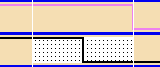

Examining errors in detail
If you are only looking at errors in your test (i.e. where the received data does not match the expected data), you can use the option errors on in the Select menu to show the differences between the expected and received data waveforms.
The areas where errors are detected are displayed shaded as shown below.

Functional changes
- Introduced before SmarTest 6.3.2